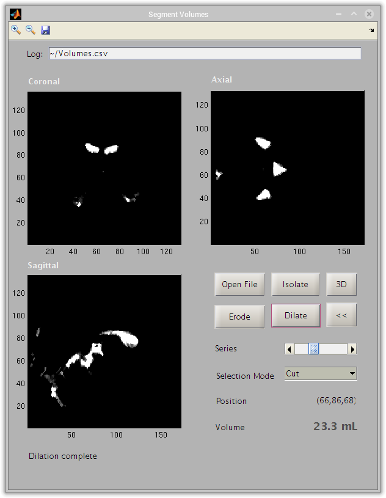

MRE Examples
Using the MRE Matlab Toolbox
Contents
Open an MRI image
MRI2MAT opens common image formats such as DICOM and NIFTI
>> [M,info] = mri2mat();
[M,info] = mri2mat();
The file you select in the file browser is opened as a matrix, which we can see has the same dimensions as those specified in the NIFTI header:
info.dime.dim(1) length(size(M))
disp(info.dime.dim(1)) disp(length(size(M)))
4
4
info.dime.dim(2:5) size(M)
disp(info.dime.dim(2:5)) disp(size(M))
132 172 136 4 132 172 136 4
Visualization in 2D
View a 2D slice of the image using the Image Toolbox function imagesc
im = flipud(squeeze(M(65,:,:,1))'); imagesc(im) colormap gray, axis tight
im = flipud(squeeze(M(65,:,:,1))'); imagesc(im) colormap gray, axis tight
Note the use of flipud and transpose (') to orient the image and squeeze to reduce the image to 2D
Visualization in 3D
View a 3D volume
S = smooth3(M(:,:,:,1)); isosurface(S,0)
Section plane through a 3D volume
Create a section plane through a 3D volume, using information from the NIFTI header to scale the axes
colormap gray D = M(round(1:info.dime.dim(2)/2),:,:,1); % split along sagittal plane Ds = smooth3(D); hiso = patch(isosurface(Ds,0),... 'FaceColor',[.5,.5,.8],... 'EdgeColor','none'); isonormals(Ds,hiso) hcap = patch(isocaps(D,0),... 'FaceColor','interp',... 'EdgeColor','none'); view(35,30) axis tight pixdim = info.dime.pixdim(2:4); % get voxel dimensions daspect(1./[pixdim(1),pixdim(2),pixdim(3)]) % scale proportional to voxel shape lightangle(90,0); set(gcf,'Renderer','opengl'); lighting phong set(hcap,'AmbientStrength',1) set(hiso,'SpecularColorReflectance',0,'SpecularExponent',50)
MREView
Use MREView to visualize volumes of up to 5 dimensions
>> MREView

The unwrap button launches a phase unwrapping function that attempts to correct large jumps in the aparent phase due to aliasing.
Volume segmentation
segmentVolumes can be used to isolate volumes (e.g., the lateral ventricles) inside an MRI file. It has a number of GUI tools to facilitate image processing, and can create 3D views on demand.
Image Processing tools available in segmentVolumes
The current volume and file information can be saved to the spreadsheet specified in the textbox at the top of the window by clicking Save in the toolbar. This also saves changes to the file in Matlab's mat format inside the image's parent folder.
>> segmentVolumes

Using the isolate tool to select a region

The image after running the isolate tool

3D rendering of isolated ventricles